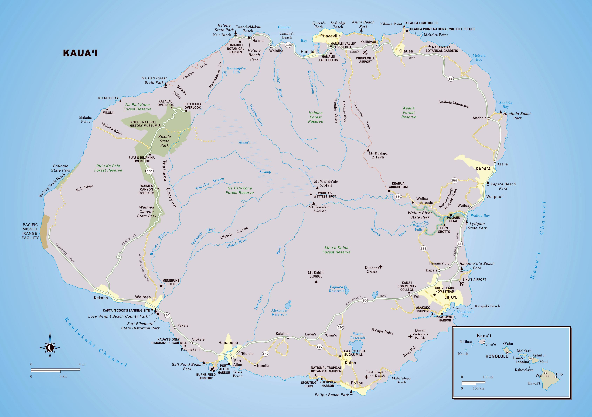
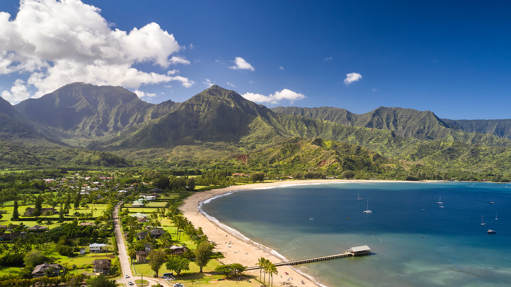

Maps & Locations
Kauaʻi is Hawaii’s oldest of the main chain of islands. Like the other Hawaiian islands, it has it's own unique character, culture, and charm. Known
as The Garden Isle for its lush, green peaks and valleys, Kauaʻi also sees more rainfall than the other islands. Mt. Waialeale is one of the wettest places on Earth.

The Four Main Regions
Nearly 80% of the island is inaccessable by car, leaving most of population located near coastal areas. These are divided into four main regions: the East Side (including Lihue and the airport), the West Side, the North Shore,
and the South Shore. Each area has a totally different vibe, weather patterns, and types of activities.
Kauaʻi Geography Basics
Once you understand Kauaʻi's geography, trip planning gets way easier. On my first visit, I didn’t get why
why you can't just circumnavigate the island. The entire northwest side of the island, known as the Na Pali coast, is inaccessable by vehicle. One of the most spectacular stretches of coastline on the planet must be reached via hiking the Kalalau Trail, or one of the many tours by air and sea.
View image
East Side (Coconut Coast)
Also known as the Coconut Coast, the East Side is the most populated area of the island. You’ll see groves of coconut
trees, and it is a convenient base for exploring.
- Notable spots: Kapa’a, Wailua River, ʻŌpaekaʻa Falls
- Why stay here: Often better value hotel deals and easy access to Lihue
- Vibe: Busy, central, and practical for first timers wanting to explore the entire island
If you want slightly cheaper accommodations, the East Side is a good place to look.
View image
West Side
The West Side feels like a different world. It is drier, quieter, and has small town energy instead of big resorts and traffic.
This area is all about big scenery and road trip stops.
- Notable towns: Hanapepe, Waimea
- Must see: Waimea Canyon, Koke’e State Park, Hanapepe Swinging Bridge
- Vibe: Remote, rugged, and scenic. Marks the southern tip of the Na Pali coast.
Waimea Canyon, the Grand Canyon of the Pacific, is one of the most popular attractions on Kauaʻi. The west side is also home to Port Allen. Most boat tours depart from this location.

View image
North Shore
The North Shore is dramatic, insanely beautiful, and my personal favorite region on the island. The cliffs, lush landscape, and beaches are the kind of views you remember forever.
Summer is ideal, and Hanalei is lively and fun. Winter brings more rain and bigger waves.
- Main towns: Hanalei and Princeville
- Good to know: Princeville sits on a bluff overlooking Hanalei Bay
- Vibe: Lush, scenic, and iconic. "Island vibes" in every sense.
Planning a summer trip? The North Shore is a top pick. Visiting in winter? Expect more rain and rougher waters make it less sutable for swimming.
View image
South Shore
The South Shore is known for sunny weather, great resorts, and picture perfect beaches. You’ll find Poipu Beach here,
plus historic Koloa Town, Spouting Horn, and the Maha’ulepu Heritage Trail.
- Must see: Poipu Beach, Koloa Town, Spouting Horn, Maha’ulepu Heritage Trail
- Why stay here: Great winter choice for calmer water and beach friendly days
- Vibe: Resort focused, beachy, and more tourist-centric
If you're visiting in the winter months, I'd suggest staying on the South Shore. The weather is also more reliable here.
Quick Planning Tips
- Want a central base? East Side is convenient and often more budget friendly. 45 minutes to an hour either direction.
- Want epic scenery? West Side is the move for Waimea Canyon and hikes through Koke’e State Park.
- Want that classic Kauaʻi look? North Shore is lush and stunning, best in summer. More precipitation, but no rain-no rainbows.
- Visiting in winter? South Shore is usually sunnier with calmer ocean conditions making it best for winter. But great year round!